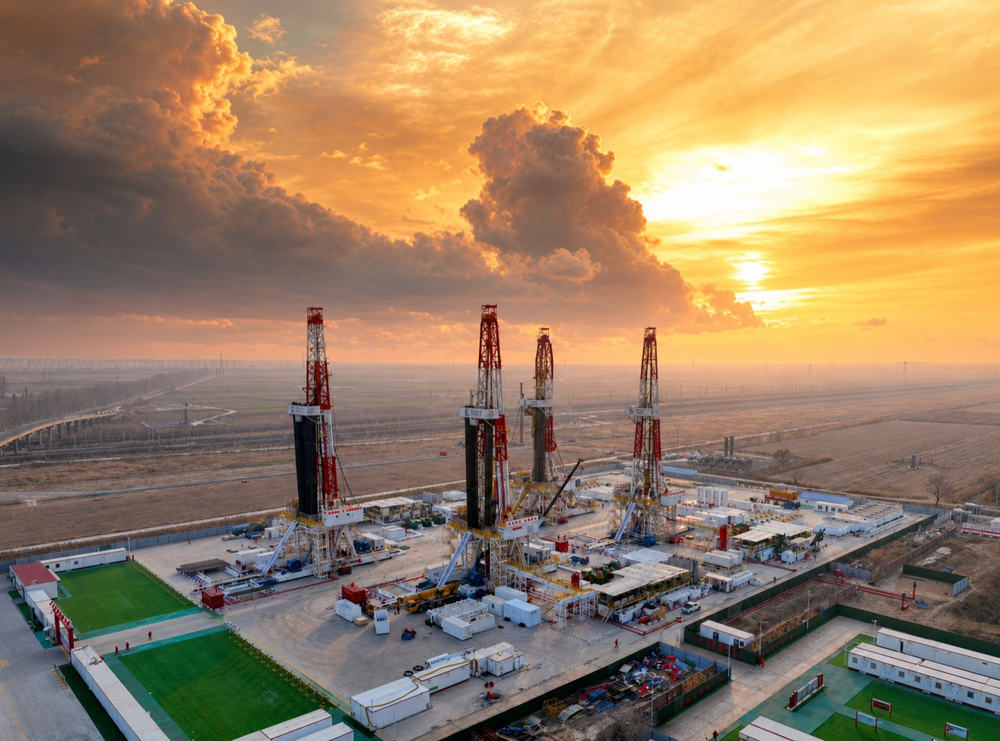

油田钻采设备Oil & Gas EquipmentОборудование для нефтегазовой отрасли
四大类装备：钻井、修井、固井、压裂。产品主要按功率/规格大小区分，下方按型号列出关键参数。Four categories: drilling, workover, cementing and fracturing. Models differ mainly by power/size; key parameters are listed by model below.Четыре категории оборудования: бурение, капитальный ремонт скважин, цементирование скважин и гидроразрыв пласта. Модели различаются главным образом по мощности и типоразмеру; ключевые параметры приведены ниже по каждой модели.
钻井装备Drilling EquipmentБуровое оборудование
系列模块钻机 ZJ30–ZJ90Series modularized drilling rigs ZJ30–ZJ90Модульные буровые установки серии ZJ30–ZJ90

系列模块钻机，钻深至 9000 m，三种动力可选（电驱 / 复合 / 机械），含钻机自动化系统与泥浆泵。Series modularized drilling rigs, up to 9000 m, with three drive options (electric / compound / mechanical), including rig automation and mud pumps.Модульные буровые установки с глубиной бурения до 9000 m, три варианта привода (электропривод / комбинированный / механический), в комплекте с системой автоматизации буровой установки и буровыми насосами.
钻井装备 型号与参数Drilling equipment — models & specsБуровое оборудование — модели и технические характеристики
自走式修井机，钩载 600–2250 kN；全电动、超级电容、LNG、沙漠 / 山地 / 冷区等多型式。Self-propelled workover rigs, 600–2250 kN; all-electric, supercapacitor, LNG, desert / mountain / cold-region variants.Самоходные агрегаты для капитального ремонта скважин, нагрузка на крюке 600–2250 kN; исполнения полностью электрическое, на суперконденсаторах, на СПГ, а также для пустыни, горной местности и холодного климата.
修井装备 型号与参数Workover equipment — models & specsОборудование для капитального ремонта скважин — модели и технические характеристики
压裂撬，单泵 / 双泵结构；最大电机功率 2100–6000 kW，最大输出功率 2500–7600 hp，最高工作压力 140 MPa。Series fracturing skids, single- or dual-pump; max. motor power 2100–6000 kW, max. output 2500–7600 hp, max. working pressure 140 MPa.Блоки ГРП серийного производства, с одним или двумя насосами; макс. мощность электродвигателя 2100–6000 kW, макс. выходная мощность 2500–7600 hp, макс. рабочее давление 140 MPa.
压裂撬 型号与参数Series fracturing skid — models & specsБлоки ГРП — модели и технические характеристики
型号ModelМодель
SYL2500Q-140DQ
SYL5000Q-140DQ
SCF5000Q-140DQ
SYL6000Q-140DQ
SYL8000Q-140DQ
柱塞泵型号Plunger pump modelМодель плунжерного насоса
SQP2800
SQP2800×2
SCF5000
SCF6000
SQP8000
结构型式Structural typeКонструктивное исполнение
单泵Single pumpОдин насос
双泵Dual pumpДва насоса
单泵Single pumpОдин насос
单泵Single pumpОдин насос
单泵Single pumpОдин насос
最大电机功率Max. motor powerМакс. мощность электродвигателя(kW)